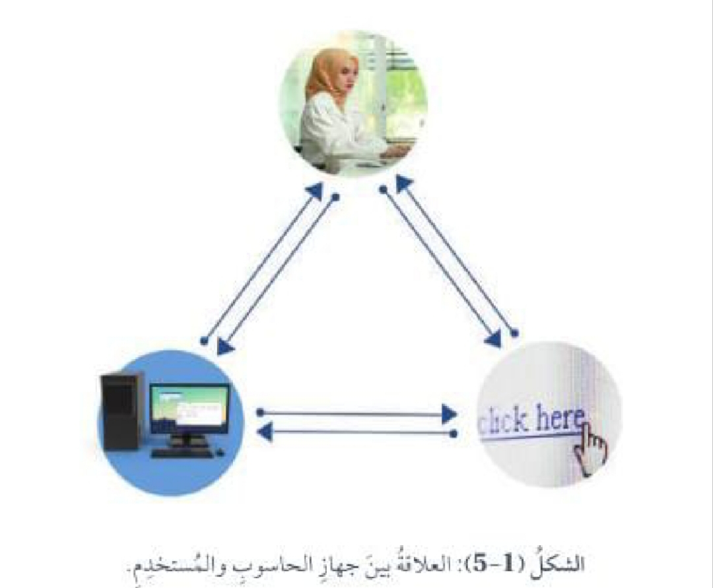
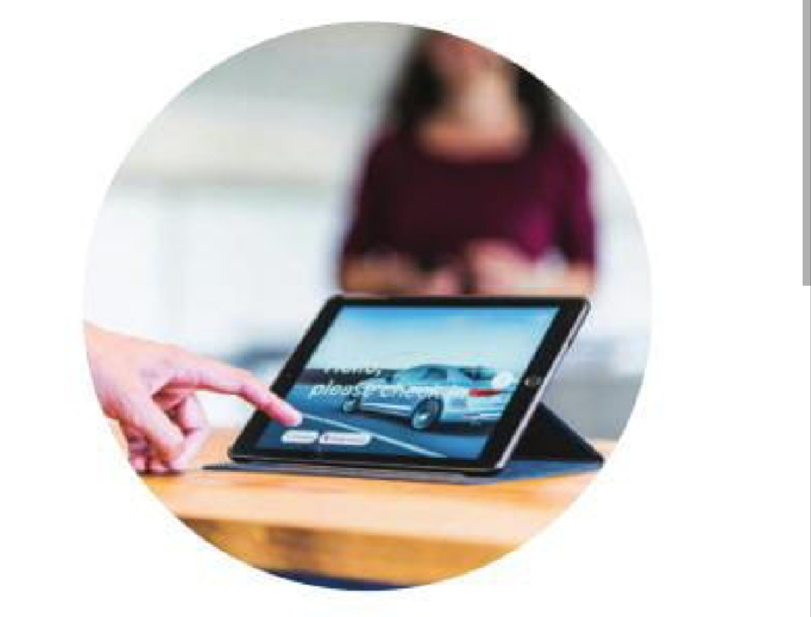

Human Computer Interaction (HCI)
المهارات الرقمية - الصف السابع
اضغط على «قراءة الدرس» للاستماع إلى محتوى الدرس.
هو كيفية تفاعل المستخدمين مع أجهزة الحاسوب، وكيف يمكن تصميم أنظمة حوسبة أكثر فاعلية وسهولة في الاستخدام.

تحسين واجهات المستخدم، وجعل التفاعل مع أدوات التكنولوجيا ووسائلها أكثر بدهية وراحة للمستخدمين.
Methods of Interacting with Computing Systems
Keyboard and Mouse
يُعد استخدام لوحة المفاتيح والفأرة إحدى أشهر الطرائق وأقدمها في التفاعل مع أجهزة الحاسوب؛ فعن طريقهما يمكن إدخال البيانات والتنقل بين القوائم والنوافذ.
Monitor
تُستخدم الشاشة في عرض المعلومات، وتقديم واجهة مرئية للمستخدم.

Touch Screens
تتيح هذه الشاشات للمستخدمين التفاعل مع الأجهزة عن طريق لمس الشاشة مباشرةً، وهي تُستخدم في الهواتف الذكية والأجهزة اللوحية والشاشات التفاعلية.
Touch Pads
يوجد هذا النوع من اللوحات في أجهزة الحاسوب المحمولة، وهو يتيح التحكم في المؤشر عن طريق اللمس.
Voice Recognition
يمكن للمستخدمين استعمال هذه التقنية لإعطاء الأجهزة أوامر صوتية والتفاعل معها، كما هو الحال في أدوات الذكاء الاصطناعي التي تقدم المساعدة للمستخدم بهذه الآلية.
Gesture Recognition
تتضمن هذه التقنية استعمال كاميرات أو أجهزة استشعار لتعرّف الحركات والإيماءات الصادرة عن اليد أو الجسم، بغية التحكم في جهاز الحاسوب. ويشيع استخدام هذه التقنية في ألعاب الفيديو وأنظمة الواقع الافتراضي.
Wearable Devices
تُعد الساعة الذكية مثالًا جيدًا على هذه التقنية؛ إذ يمكن بها تعرّف حركات معينة للتحكم في بعض الوظائف.
Face Recognition
تُستخدم هذه التقنية للتعرّف إلى المستخدم وتسجيل الدخول إلى الأنظمة.
Eye Tracking
تُستعمل هذه التقنية للتحكم في المؤشر أو التنقل بين القوائم.
User Interface Elements
تتنوع واجهات المستخدم من حيث:
Graphical User Interface (GUI)
تُستخدم هذه الواجهة في أنظمة التشغيل، مثل Windows و macOS، وهي تسهّل عملية التفاعل عن طريق النوافذ والأيقونات والقوائم.
Command-Line Interface (CLI)
تعتمد هذه الواجهة في عملها على الأوامر النصية التي يكتبها المستخدم، وهي شائعة الاستخدام في أوساط المطورين ومسؤولي النظام.
Voice User Interface (VUI)
واجهات تعتمد في عملية التفاعل على الأوامر الصوتية وتفسيرها.
ومن أمثلتها أيضًا برامج المساعدة في الذكاء الاصطناعي.
Augmented Reality (AR) User Interface
واجهات تدمج العناصر الافتراضية في البيئة الطبيعية، وهي تُستخدم بصورة شائعة في تطبيقات الملاحة والألعاب والتعليم.
Virtual Reality (VR) User Interfaces
واجهات تتضمن إنشاء بيئات افتراضية للتفاعل مع المستخدم، وهي تُستخدم في ألعاب الواقع الافتراضي والمحاكاة وبرامج التدريب، وتعتمد على التفاعل بالإيماءات والأجهزة التفاعلية مع أعضاء الجسد.